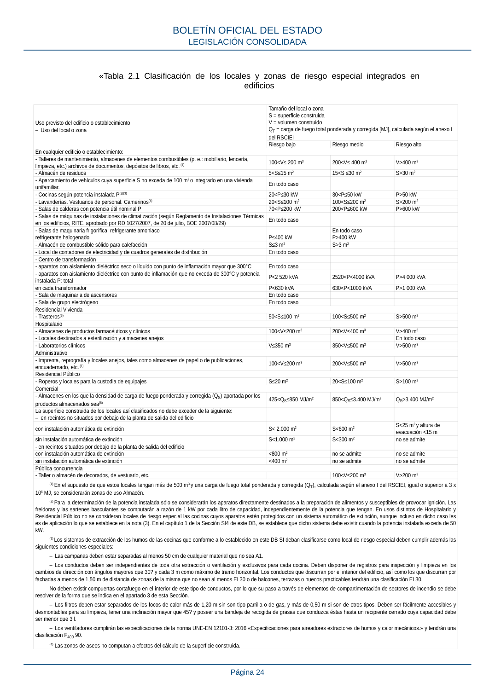

RSCIEI · Página 24 · versión 2025-04-10
SHA256: 85aa0af25d51e5b58d8975a4eefbf76d3f57a8933445cfe814ae9c4818a2e3e7 · página física 24 de 108 · métodos de encabezado
solo si están cotejados.
Formatos: Markdown · JSON de bloques · PDF p. 24 · imagen PNG
«Tabla 2.1 Clasificación de los locales y zonas de riesgo especial integrados en edificios Uso previsto del edificio o establecimiento – Uso del local o zona Tamaño del local o zona S = superficie construida V = volumen construido QT = carga de fuego total ponderada y corregida [MJ], calculada según el anexo I del RSCIEI Riesgo bajo Riesgo medio Riesgo alto En cualquier edificio o establecimiento: - Talleres de mantenimiento, almacenes de elementos combustibles (p. e.: mobiliario, lencería, limpieza, etc.) archivos de documentos, depósitos de libros, etc. (1) 100<V≤ 200 m3 200<V≤ 400 m3 V>400 m3 - Almacén de residuos 5<S≤15 m2 15<S ≤30 m2 S>30 m2 - Aparcamiento de vehículos cuya superficie S no exceda de 100 m2 o integrado en una vivienda unifamiliar. En todo caso - Cocinas según potencia instalada P(2)(3) 20<P≤30 kW 30<P≤50 kW P>50 kW - Lavanderías. Vestuarios de personal. Camerinos(4) 20<S≤100 m2 100<S≤200 m2 S>200 m2 - Salas de calderas con potencia útil nominal P 70<P≤200 kW 200<P≤600 kW P>600 kW - Salas de máquinas de instalaciones de climatización (según Reglamento de Instalaciones Térmicas en los edificios, RITE, aprobado por RD 1027/2007, de 20 de julio, BOE 2007/08/29) En todo caso - Salas de maquinaria frigorífica: refrigerante amoniaco En todo caso refrigerante halogenado P≤400 kW P>400 kW - Almacén de combustible sólido para calefacción S≤3 m2 S>3 m2 - Local de contadores de electricidad y de cuadros generales de distribución En todo caso - Centro de transformación - aparatos con aislamiento dieléctrico seco o líquido con punto de inflamación mayor que 300°C En todo caso - aparatos con aislamiento dieléctrico con punto de inflamación que no exceda de 300°C y potencia instalada P: total P<2 520 kVA 2520<P<4000 kVA P>4 000 kVA en cada transformador P<630 kVA 630<P<1000 kVA P>1 000 kVA - Sala de maquinaria de ascensores En todo caso - Sala de grupo electrógeno En todo caso Residencial Vivienda - Trasteros(5) 50<S≤100 m2 100<S≤500 m2 S>500 m2 Hospitalario - Almacenes de productos farmacéuticos y clínicos 100<V≤200 m3 200<V≤400 m3 V>400 m3 - Locales destinados a esterilización y almacenes anejos En todo caso - Laboratorios clínicos V≤350 m3 350<V≤500 m3 V>500 m3 Administrativo - Imprenta, reprografía y locales anejos, tales como almacenes de papel o de publicaciones, encuadernado, etc. (1) 100<V≤200 m3 200<V≤500 m3 V>500 m3 Residencial Público - Roperos y locales para la custodia de equipajes S≤20 m2 20<S≤100 m2 S>100 m2 Comercial - Almacenes en los que la densidad de carga de fuego ponderada y corregida (QS) aportada por los productos almacenados sea(6) 425<QS≤850 MJ/m2 850<QS≤3.400 MJ/m2 QS>3.400 MJ/m2 La superficie construida de los locales así clasificados no debe exceder de la siguiente: – en recintos no situados por debajo de la planta de salida del edificio con instalación automática de extinción S< 2.000 m2 S<600 m2 S<25 m2 y altura de evacuación <15 m sin instalación automática de extinción S<1.000 m2 S<300 m2 no se admite - en recintos situados por debajo de la planta de salida del edificio con instalación automática de extinción <800 m2 no se admite no se admite sin instalación automática de extinción <400 m2 no se admite no se admite Pública concurrencia - Taller o almacén de decorados, de vestuario, etc. 100<V≤200 m3 V>200 m3 (1) En el supuesto de que estos locales tengan más de 500 m3 y una carga de fuego total ponderada y corregida (QT), calculada según el anexo I del RSCIEI, igual o superior a 3 x 106 MJ, se considerarán zonas de uso Almacén. (2) Para la determinación de la potencia instalada sólo se considerarán los aparatos directamente destinados a la preparación de alimentos y susceptibles de provocar ignición. Las freidoras y las sartenes basculantes se computarán a razón de 1 kW por cada litro de capacidad, independientemente de la potencia que tengan. En usos distintos de Hospitalario y Residencial Público no se consideran locales de riesgo especial las cocinas cuyos aparatos estén protegidos con un sistema automático de extinción, aunque incluso en dicho caso les es de aplicación lo que se establece en la nota (3). En el capítulo 1 de la Sección SI4 de este DB, se establece que dicho sistema debe existir cuando la potencia instalada exceda de 50 kW. (3) Los sistemas de extracción de los humos de las cocinas que conforme a lo establecido en este DB SI deban clasificarse como local de riesgo especial deben cumplir además las siguientes condiciones especiales: – Las campanas deben estar separadas al menos 50 cm de cualquier material que no sea A1. – Los conductos deben ser independientes de toda otra extracción o ventilación y exclusivos para cada cocina. Deben disponer de registros para inspección y limpieza en los cambios de dirección con ángulos mayores que 30? y cada 3 m como máximo de tramo horizontal. Los conductos que discurran por el interior del edificio, así como los que discurran por fachadas a menos de 1,50 m de distancia de zonas de la misma que no sean al menos EI 30 o de balcones, terrazas o huecos practicables tendrán una clasificación EI 30. No deben existir compuertas cortafuego en el interior de este tipo de conductos, por lo que su paso a través de elementos de compartimentación de sectores de incendio se debe resolver de la forma que se indica en el apartado 3 de esta Sección. – Los filtros deben estar separados de los focos de calor más de 1,20 m sin son tipo parrilla o de gas, y más de 0,50 m si son de otros tipos. Deben ser fácilmente accesibles y desmontables para su limpieza, tener una inclinación mayor que 45? y poseer una bandeja de recogida de grasas que conduzca éstas hasta un recipiente cerrado cuya capacidad debe ser menor que 3 l. – Los ventiladores cumplirán las especificaciones de la norma UNE-EN 12101-3: 2016 «Especificaciones para aireadores extractores de humos y calor mecánicos.» y tendrán una clasificación F400 90. (4) Las zonas de aseos no computan a efectos del cálculo de la superficie construida. BOLETÍN OFICIAL DEL ESTADO LEGISLACIÓN CONSOLIDADA Página 24
